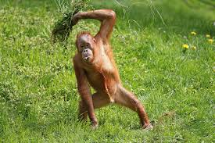

Orangutan


The greatest mamel on the planet!!
The Name Orangutan Means 'Forest Person' The very name orangutan is strange enough to deserve some explanation. The Indonesian and Malay languages share two words—"orang" (person) and "hutan" (forest), which would seem to make the provenance of orangutan, "forest person," an open-and-shut case. However, the Malay language also employs two specific words for orangutan, either "maias" or "mawas," leading to some confusion about whether "orang-hutan" originally referred not to orangutans but to any forest-dwelling primates. Further complicating matters, it's even possible that "orang-hutan" originally referred not to orangutans but to humans with severe mental deficiencies.